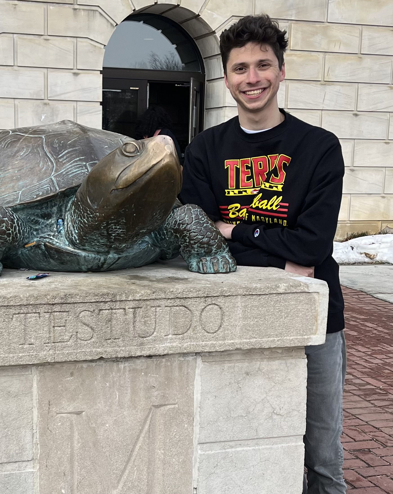
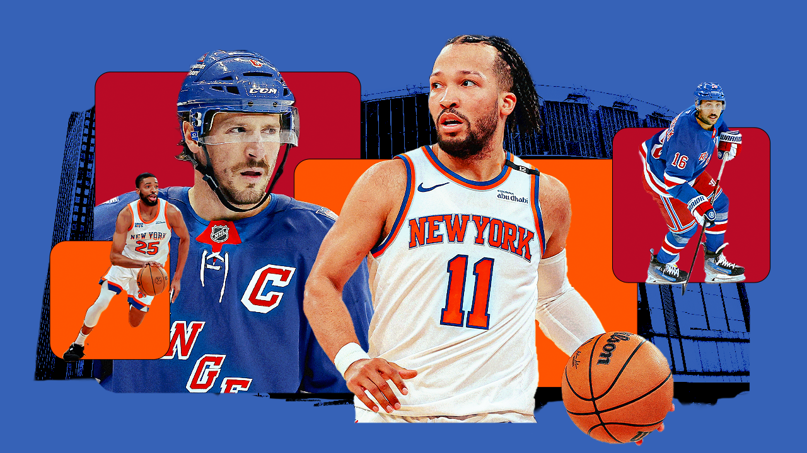
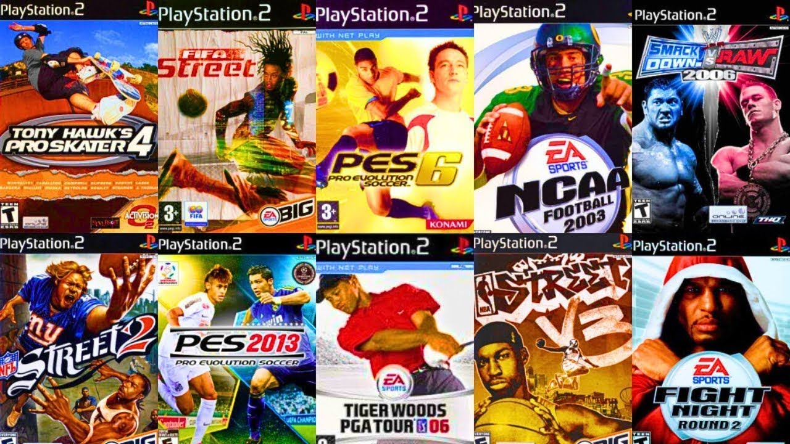

Welcome to my sports media page.

I am a passionate sports journalist who lives for the thrill of victory and the agony of defeat. I have always been drawn to these witnessing and telling the story of these emotions in real time, there is nothing more pure. Having for grown up in the heart of the DMV, I have always been surrounded by the best high school basketball in the country, that is not an understatement. The surplus of action around the area inspired me to start writing about the sport I was raised on. I have been fortunate enough to cover some of the best high school basketball in the country, and I am excited to continue telling these stories in the future.
My heart belongs to these teams: The New York Knicks and Rangers.

and the ps2
